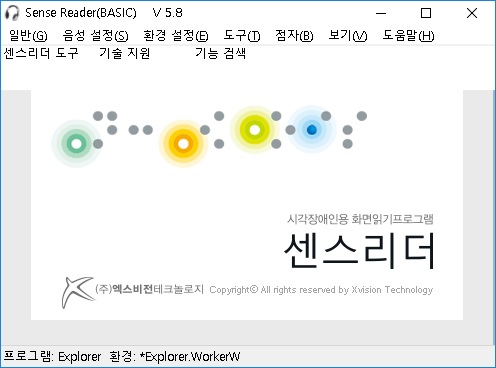

Ⅰ-1. 센스리더 소개

센스리더는 Microsoft의 운영체제인 윈도우즈와 기반 응용 프로그램의 사용을 위한 시각장애인용 화면읽기 프로그램입니다.
윈도우즈는 시각적 직관성을 고려한 그래픽 기반의 운영체제이기 때문에 화면을 볼 수 없는 시각장애인들에게는 그만큼 더 사용하기 힘든 운영체제입니다.
센스리더는 디스플레이상에 표시되는 텍스트와 그래픽 정보를 음성합성장치나 TTS 엔진을 사용해 읽어줌으로써 시각장애인이 컴퓨터를 사용할 수 있도록 도와주는 응용소프트웨어입니다.
기본적인 음성출력기능 외에도 센스리더는 사용자들이 보다 손쉽게 응용프로그램에 접근할 수 있도록 여러 가지 인터페이스를 제공함으로써 직업재활이나 학습활동에서 사용되는 각종 응용프로그램의 활용을 가능하게 합니다.
센스리더는 이와 같이 현대 정보화사회를 살아가는 시각장애인들에게 정보화의 안내자로써의 역할을 충실히 담당하고 있는 화면읽기 프로그램입니다.
1. 완벽한 리뷰 기능
화면읽기프로그램의 핵심은 무엇보다도 화면에 표시된 내용을 살펴볼 수 있는 리뷰 기능입니다.
센스리더는 윈도우즈 버젼이나 응용프로그램에 상관없이 완벽한 리뷰 기능을 지원하여 기존 응용 프로그램뿐만 아니라 새로 출시되는 응용 프로그램들에 대해 높은 접근성을 제공합니다.
2. 높은 안정성과 기능성 모두를 고려한 설계
컴퓨터를 사용하는 도중 갑자기 컴퓨터가 다운되어 버리거나 음성출력이 중단된다면 화면을 볼 수 없는 시각장애인들에게는 그만큼 더 치명적일 수밖에 없습니다. 센스리더는 국내 어떤 화면읽기프로그램보다 높은 안정성을 제공하여 안심하고 컴퓨터 작업을 할 수 있는 환경을 지원합니다.
안정성과 함께 기능성 또한 화면읽기 프로그램이 갖추어야 할 필수적인 요소입니다.
윈도우즈는 기본적으로 그래픽에 기반한 복잡한 사용자환경을 가진 운영체제이며, 더욱이 최근의 소프트웨어들은 화려한 인터페이스를 강조하는 방향으로 개발되고 있습니다. 이러한 사용자 환경에서 시각장애인이 편리하게 프로그램들을 활용할 수 있기 위해서는 응용 프로그램에 접근할 수 있는 다양한 기능을 갖추고 있어야만 합니다.
3. 빠른 반응속도
청각과 촉각을 이용하여 정보를 습득해야 하는 시각장애인들에게 있어, 화면에 표시된 정보를 사용자가 원하는 때에 정확하고 신속하게 음성으로 출력할 수 있는 기술은 시각장애인의 작업 능률에 많은 영향을 줍니다.
센스리더는 응용 프로그램에 상관없이 뛰어난 반응속도를 구현함으로써 작업 능률 향상에 많은 도움을 줍니다.
4. 주요 응용프로그램을 위한 별도의 인터페이스 제공
소프트웨어들 중에는 화면에 표시되는 텍스트와 그래픽 정보만 가지고서는 사용에 있어 어려움을 겪을 수밖에 없는 프로그램들이 많이 있습니다. 인터넷 익스플로러, PDF문서, MS-OFFICE, 한글 워드프로세서 등이 이런 경우에 속하는 대표적인 프로그램들입니다.
센스리더는 국내에서 사용되고 있는 주요 프로그램들을 위해 별도의 인터페이스를 지원함으로써 시각장애인이 보다 편리하게 이들 소프트웨어를 사용할 수 있는 방법을 제공해 줍니다.
5. 뛰어난 환경설정파일
사용자들은 각자 성격이 다른 것처럼 화면읽기프로그램을 사용하는 방식에도 많은 차이가 있습니다.
센스리더는 사용자가 자신의 개성에 맞게 프로그램의 동작방식을 설정할 수 있고, 모든 기능키를 컴퓨터 기종이나 개인의 취향에 따라 자유롭게 변경하여 사용할 수 있습니다. 특히, 노트북 사용자를 위한 키정의가 가능하여 점차 증가하고 있는 노트북 사용자들에게도 최적의 환경을 제공합니다.
Ⅰ-2. 센스리더 베이직

센스리더 베이직은 윈도우즈11 32/64비트 운영체제를 지원하며, 일반 컴퓨터 사용자를 위한 버전입니다. 인터넷 읽기 기능, 다양한 멀티미디어 지원 기능, 메신저 자동 읽기 기능, 점자정보단말기 점자 입/출력 기능 등 컴퓨터 사용에 있어 필수적인 기능들을 갖추고 있습니다.
센스리더 베이직 버전의 주요 기능은 다음과 같습니다.
1. 윈도우즈7 부터 윈도우즈11(32/64bit) 운영체제 지원
윈도우즈8.1, 윈도우즈10 및 윈도우즈11 운영체제를 지원함으로써 급변하는 컴퓨터 환경에 우리 시각장애인들도 능동적으로 대처할 수 있는 토대를 마련했습니다.
2. 점자정보단말기와의 완벽한 연동
학업이나 업무를 효율적으로 처리하기 위해서는 컴퓨터 음성만으로 정보를 습득해서는 불충분하며 점자의 사용이 필수적입니다.
센스리더는 이를 위해 Braille note, 한소네 브레일, 씽크 브레일, Seika 등 점자정보단말기와의 완벽한 연동 기능을 제공합니다.
3. GOM 플레이어, 다음 팟 플래이어 및 메신저 지원 기능 강화
창 크기 조절이나 환경 설정 등의 번거로운 작업이 필요없이 손쉽게 자막 있는 동영상과 메신저 대화를 즐길 수 있습니다.
4. 센스 독서기 기능 강화
오디오 파일 이퀄라이저 재생 기능과 오디오 CD 및 동영상 파일의 MP3 변환 기능, 실시간 MP3 녹음 기능 등의 다양한 멀티미디어 관련 기능들이 추가되어 센스 독서기만으로도 충분히 멀티미디어 콘텐츠를 즐길 수 있습니다.
5. 인터넷 지원 기능 강화
웹 콘텐츠 접근성 지침에서 요구하고 있는 대부분의 내비게이션 기능을 지원하고, 국내 인터넷 상황에 맞도록 다양한 편의 기능이 구현되어 있습니다. 또한, 플래시, 플랙스, 실버라이트 등의 플러그인 개체 지원 기능도 갖추고 있어 인터넷 활용이 한층 편리해졌습니다.
6. 즐겨찾기 기능 지원
센스리더는 기존 웹 사이트에서만 제공하던 즐겨찾기 기능을 웹 사이트는 물론 자주 사용하는 응용 프로그램에서도 사용할 수 있어 컴퓨팅 환경을 보다 쉽게 만들어 줍니다.
7. 클라우드 환경 관리 지원
사용자가직접 설정한 환경 설정파일을 USB 이동식 장치 없이 센스리더의 클라우드 기능을 통해 언제든지 백업하고 다시 복원할 수 있어 보다 효율적인 환경 관리가 가능합니다.
8. 원격 서비스 지원 기능
센스리더는 그동안 구현이 어려웠던 원격 서비스를 자체 개발하여 탑재하므로써 컴퓨터에 문제가 발생한 경우 사용자간 연결 또는 전문 상담원과의 직접 연결을 통해 보다 능동적인 대처가 가능합니다.
9. 일정 관리 기능
원하는 날짜/시간에 알림을 받고, 컴퓨터를 사용하는 시간을 관리하며, 양력/음력 날짜를 손쉽게 확인할 수 있는 일정 관리 기능을 제공합니다.
Ⅰ-3. 센스리더 프로페셔널

센스리더 프로페셔널은 학습 및 직장생활에서 자주 사용되는 오피스 계열 프로그램에 대해 특성화된 접근방식을 사용함으로써 향상된 지원 기능을 제공합니다. 워드 및 엑셀 문서의 내용 확인은 물론 글꼴, 서식 등을 쉽게 확인할 수 있고, 대학교/대학원 교안으로 많이 제공되는 PPT 문서도 손쉽게 활용할 수 있습니다.
센스리더 프로페셔널 버전에서 지원하는 주요 기능은 다음과 같습니다.
1. 윈도우즈7 부터 윈도우즈11(32/64bit) 운영체제 지원
윈도우즈8.1, 윈도우즈10 및 윈도우즈11 운영체제를 지원함으로써 급변하는 컴퓨터 환경에 우리 시각장애인들도 능동적으로 대처할 수 있는 토대를 마련했습니다.
2. 점자정보단말기와의 완벽한 연동
학업이나 업무를 효율적으로 처리하기 위해서는 컴퓨터 음성만으로 정보를 습득해서는 불충분하며 점자의 사용이 필수적입니다.
센스리더는 이를 위해 Braille note, 한소네 브레일, 씽크 브레일, Seika 등 점자정보단말기와의 완벽한 연동 기능을 제공합니다.
3. GOM 플레이어, 다음 팟 플래이어 및 메신저 지원 기능 강화
창 크기 조절이나 환경 설정 등의 번거로운 작업이 필요없이 손쉽게 자막 있는 동영상과 메신저 대화를 즐길 수 있습니다.
4. 센스 독서기 기능 강화
오디오 파일 이퀄라이저 재생 기능과 오디오 CD 및 동영상 파일의 MP3 변환 기능, 실시간 MP3 녹음 기능 등의 다양한 멀티미디어 관련 기능들이 추가되어 센스 독서기만으로도 충분히 멀티미디어 콘텐츠를 즐길 수 있습니다.
5. 인터넷 지원 기능 강화
웹 콘텐츠 접근성 지침에서 요구하고 있는 대부분의 내비게이션 기능을 지원하고, 국내 인터넷 상황에 맞도록 다양한 편의 기능이 구현되어 있습니다. 또한, 플래시, 플랙스, 실버라이트 등의 플러그인 개체 지원 기능도 갖추고 있어 인터넷 활용이 한층 편리해졌습니다.
6. 다양한 TTS 엔진 탑재
VoiceWare사의 영어(Kate) 및 일어(Misaki) 음성엔진을 추가함으로써 보다 질 높은 어학 학습이 가능해졌습니다. 한국어도 '혜련' 음성엔진을 추가해 사용자들의 선택권을 향상시켰습니다.
7. 센스 사전 추가
동아 프라임 데이터를 라이센스하여 신뢰성이 높고, 센스리더의 기능과 연동하여 편리하게 사용할 수 있는 사전(영한, 한영, 국어, 노래방) 프로그램을 추가하였습니다.
8. MS-OFFICE 및 한글 워드프로세서 지원 기능 강화
학습 및 직장생활에서 필수적으로 이용되고 있는 오피스 및 한글 워드프로세서에 대해 특성화된 접근 방식을 채택함으로써 접근성과 활용성을 증진시켰습니다.
9. 즐겨찾기 기능 지원
센스리더는 기존 웹 사이트에서만 제공하던 즐겨찾기 기능을 웹 사이트는 물론 자주 사용하는 응용 프로그램에서도 사용할 수 있어 컴퓨팅 환경을 보다 쉽게 만들어 줍니다.
10. 클라우드 환경 관리 지원
사용자가직접 설정한 환경 설정파일을 USB 이동식 장치 없이 센스리더의 클라우드 기능을 통해 언제든지 백업하고 다시 복원할 수 있어 보다 효율적인 환경 관리가 가능합니다.
11. 원격 서비스 지원 기능
센스리더는 그동안 구현이 어려웠던 원격 서비스를 자체 개발하여 탑재하므로써 컴퓨터에 문제가 발생한 경우 사용자간 연결 또는 전문 상담원과의 직접 연결을 통해 보다 능동적인 대처가 가능합니다.
12. 일정 관리 기능
원하는 날짜/시간에 알림을 받고, 컴퓨터를 사용하는 시간을 관리하며, 양력/음력 날짜를 손쉽게 확인할 수 있는 일정 관리 기능을 제공합니다.
Ⅰ-4. 센스리더 더 넥스트

센스리더 더 넥스트는 프로페셔널의 모든 기능과 더불어 문자 인식 OCR(Optical Character Recognition)과 제어 기능을 지원하여 사무직 종사자가 고가의 장비를 마련하지 않아도 타인의 도움 없이 인쇄물의 내용을 확인할 수 있으며 접근성이 미흡한 응용 프로그램이나 웹 사이트등 시각장애인이 홀로 접근 및 활용이 불가능하던 콘텐츠를 이용할 수 있도록 도와 줍니다.
센스리더 더 넥스트 버전에서 지원하는 주요 기능은 다음과 같습니다.
1. 문자 인식 OCR(Optical Character Recognition)기능 지원
국내 최초로 한국어, 영어등 다국어를 지원하는 OCR기능을 추가하므로써 별도의 기기 없이 컴퓨터만으로도 사진이나 이미지의 내용을 손쉽게 확인할 수 있게 되었습니다.
또한 접근성이 미흡한 웹 사이트나 응용프로그램을 활용할 수 있도록 화면 판독과 동시에 제어할 수 있는 기술이 적용되어 타인의 도움 없이 시각장애인이 컴퓨터를 활용할 수 있는 폭을 대폭 넓혔습니다.
2. 윈도우즈7 부터 윈도우즈11(32/64bit) 운영체제 지원
윈도우즈8.1, 윈도우즈10 및 윈도우즈11 운영체제를 지원함으로써 급변하는 컴퓨터 환경에 우리 시각장애인들도 능동적으로 대처할 수 있는 토대를 마련했습니다.
3. 점자정보단말기와의 완벽한 연동
학업이나 업무를 효율적으로 처리하기 위해서는 컴퓨터 음성만으로 정보를 습득해서는 불충분하며 점자의 사용이 필수적입니다.
센스리더는 이를 위해 Braille note, 한소네 브레일, 씽크 브레일, Seika 등 점자정보단말기와의 완벽한 연동 기능을 제공합니다.
4. GOM 플레이어, 다음 팟 플래이어 및 메신저 지원 기능 강화
창 크기 조절이나 환경 설정 등의 번거로운 작업이 필요없이 손쉽게 자막 있는 동영상과 메신저 대화를 즐길 수 있습니다.
5. 센스 독서기 기능 강화
오디오 파일 이퀄라이저 재생 기능과 오디오 CD 및 동영상 파일의 MP3 변환 기능, 실시간 MP3 녹음 기능 등의 다양한 멀티미디어 관련 기능들이 추가되어 센스 독서기만으로도 충분히 멀티미디어 콘텐츠를 즐길 수 있습니다.
또한 이미지로 구성된 인쇄물과 각종 청구서 및 우편물등 시각장애인 홀로 확인할 수 없엇던 각종 인쇄물 또한 스캔이나 카메라등을 이용해 파일 형식으로 저장 후 문자 인식기능을 통해 내용을 확인할 수 있게 하므로써 멀티미디어 기능과 더불어 다방면으로 활용이 가능하도록 하였습니다..
6. 인터넷 지원 기능 강화
웹 콘텐츠 접근성 지침에서 요구하고 있는 대부분의 내비게이션 기능을 지원하고, 국내 인터넷 상황에 맞도록 다양한 편의 기능이 구현되어 있으며, 플래시, 플랙스, 실버라이트 등의 플러그인 개체 지원 기능도 갖추고 있어 인터넷 활용이 한층 편리해졌습니다.
또한 접근성이 확보되지 않은 웹 사이트를 이용시 문자 인식과 제어 기능을 통해 웹 서핑이 가능하도록 구현하므로써 독보적인 자체접근성을 성립 하고 활용성 또한 극대화하였습니다.
7. 다양한 TTS 엔진 탑재
VoiceWare사의 영어(Kate) 및 일어(Misaki) 음성엔진을 추가함으로써 보다 질 높은 어학 학습이 가능해졌습니다. 한국어도 '혜련' 음성엔진을 추가해 사용자들의 선택권을 향상시켰습니다.
8. 센스 사전 추가
동아 프라임 데이터를 라이센스하여 신뢰성이 높고, 센스리더의 기능과 연동하여 편리하게 사용할 수 있는 사전(영한, 한영, 국어, 노래방) 프로그램을 추가하였습니다.
9. MS-OFFICE 및 한글 워드프로세서 지원 기능 강화
학습 및 직장생활에서 필수적으로 이용되고 있는 오피스 및 한글 워드프로세서에 대해 특성화된 접근 방식을 채택함으로써 접근성과 활용성을 증진시켰습니다.
10. 즐겨찾기 기능 지원
센스리더는 기존 웹 사이트에서만 제공하던 즐겨찾기 기능을 웹 사이트는 물론 자주 사용하는 응용 프로그램에서도 사용할 수 있어 컴퓨팅 환경을 보다 쉽게 만들어 줍니다.
11. 클라우드 환경 관리 지원
사용자가직접 설정한 환경 설정파일을 USB 이동식 장치 없이 센스리더의 클라우드 기능을 통해 언제든지 백업하고 다시 복원할 수 있어 보다 효율적인 환경 관리가 가능합니다.
12. 원격 서비스 지원 기능
센스리더는 그동안 구현이 어려웠던 원격 서비스를 자체 개발하여 탑재하므로써 컴퓨터에 문제가 발생한 경우 사용자간 연결 또는 전문 상담원과의 직접 연결을 통해 보다 능동적인 대처가 가능합니다.
13. 일정 관리 기능
원하는 날짜/시간에 알림을 받고, 컴퓨터를 사용하는 시간을 관리하며, 양력/음력 날짜를 손쉽게 확인할 수 있는 일정 관리 기능을 제공합니다.
Ⅰ-5. 센스원 리더

센스원 리더는 시각장애인 올인원 디바이스인 센스원에 전용으로 탑재되는 제품으로 더 넥스트의 모든 기능을 지원합니다.
센스원 리더에서 지원하는 주요 기능은 다음과 같습니다.
1. 센스리더 더 넥스트의 모든 기능 지원
센스리더 더 넥스트의 특장점인 문자 인식 기능과 화면 판독 기능을 동일하게 이용할 수 있습니다.
또한 향상된 프로그램 접근성 및 웹 사이트에서의 문자 인식 기능, 스캐너등 모든 기능이 더 넥스트와 동일 합니다.
2. 장치 고유의 인증 방식 도입
인터넷을 통한 제품 인증 방식이 아닌 센스원 제품 고유의 인증 방식을 제공하기 때문에 인터넷 연결과 관계 없이 어디서나 센스원 리더를 사용할 수 있습니다.